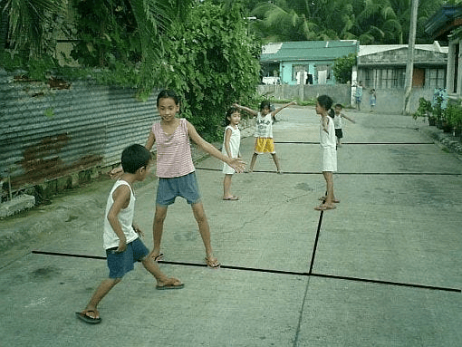
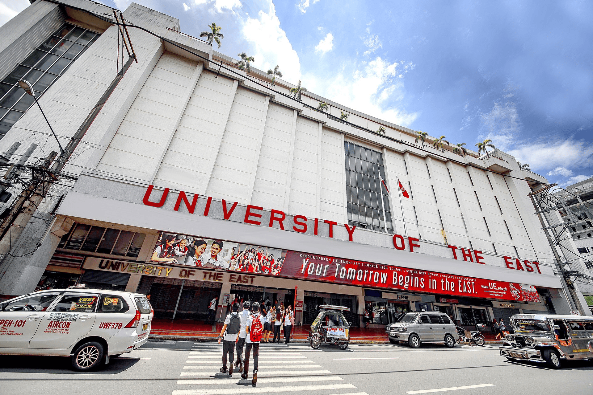

Childhood Years
In elementary school, it was enjoyable; it felt like going to school just to have fun. I wasn’t the type of kid who focused on studying, and I didn’t even make my own assignments. Most of the time, I just went with the flow and enjoyed being with my classmates. I had my first crush in elementary school, which made things even more exciting. I was born in a neighborhood that was really fun, and this is where I met friends I will never forget. We spent most of our days playing outside, running around, and laughing together. My siblings and I lived with our grandparents, which was both fun and chaotic. Having relatives around all the time made our home lively but also toxic at times. There were many moments when we just wanted peace, but that was hard to find in a big family. Despite that, I loved my grandparents deeply, and they played a significant role in my life. One of my favorite things to do as a child was to play outside until nightfall. My grandparents would always scold me for staying out too late, but I couldn’t help it—I was just having too much fun. Looking back, I now realize how much they cared for me, even when they were strict. This was also the time when my family struggled financially, but as a child, I didn’t fully understand what was happening. All I knew was that sometimes things were difficult, but we still found ways to be happy. My parents separated when I was young, and at the time, I didn’t completely grasp the situation. I only knew that something was missing, but I tried to act normal. Later on, they reconciled, which brought me so much happiness. It was a huge deal for us because, as kids, having both parents together felt like the most important thing. Despite all the ups and downs, my childhood was filled with moments I cherish. Those days shaped me into who I am today, and I will always hold them close to my heart.
 Go to TopTeenage Years
When I was a teenager, nothing really changed much—I still loved playing, but now it was mostly video games. In high school, I wasn’t serious about my studies, which I now regret because it made college harder for me. There are things I should have learned back then that I struggle with now. I was so focused on video games that I started dreaming of becoming a pro player. Since I didn’t have a PC at home, I would always save my allowance to spend it at a computer café. Every day, I would go home, change my clothes, and play until night, even on school nights. I was so obsessed with gaming that I didn’t go outside much or even buy new clothes. My parents eventually had to step in because my grades were suffering. Despite that, my teenage years weren’t all bad. My family finally separated from our grandparents, which made us happy. During this time, I also developed a crush on someone, but unfortunately, she didn’t like me back. It didn’t bother me much because we were just teenagers, and I knew life would go on. I also met friends back then that I still hang out with now, and they are the best. Then the pandemic happened, which at first made me happy because there were no physical classes. We had online classes, and I was in Grade 10 at the time. I played a lot of video games, but surprisingly, my grades improved, so my parents didn’t mind. This was also when I started talking to my crush again because we played games together with our friends. At first, we were just friends, but over time, we developed feelings for each other. Eventually, we got together, though it was tough because her parents were very strict. When I finally met them, they were nice and accepted me well. Of course, we had to focus on our studies first, so I started improving myself. I began buying clothes and just being a better version of myself for her. Senior high school started, and I enrolled at UE, one of my dream schools and also where my brother graduated. At first, I was really nervous, but I met a lot of great friends. My grades were good, but everything crashed when my girlfriend broke up with me for reasons I didn’t understand. It wrecked me because I had liked her since high school, and just like that, it was over. Back then, I was really fat because of the pandemic, and I became insecure, but I eventually lost weight and got slimmer.
 Go to Top
Go to Top
College Years
Now that I’m in college, I’m doing well, though I wasn’t really expecting much. My first year was fun, and the subjects were surprisingly easy for us. Even in the second semester, things weren’t too bad, though our schedule became hectic. This was when I started to take my studies more seriously. Since I’m the only one left studying—my sister and brother are already working—I felt the pressure to do well. My parents are in the province, and I only have my sister here with me. At first, it wasn’t so bad, but over time, I started to feel lonely and missed my family a lot. However, I reminded myself that I still have friends here, which made things a little easier. When my second year started, things became hell. This was when I realized that I had to double my efforts if I wanted to succeed. The subjects became harder, and the workload was overwhelming. I found myself struggling to keep up with deadlines and requirements. There were days when I felt completely drained, but I kept pushing forward. I knew that if I didn’t take my studies seriously now, I would regret it in the future. Despite the challenges, I tried to stay motivated and remind myself why I started. College has been a rollercoaster, but I’ve learned a lot about responsibility and perseverance. I still miss my family, but I’m slowly getting used to being independent. There are times when I wish things were easier, but I know that hard work will pay off. My friends have been a great source of support, and I’m grateful to have them around. I sometimes wonder what the future holds, but for now, I’m focused on doing my best. Although it’s tough, I believe that all of these struggles will be worth it in the end.
 Go to Top